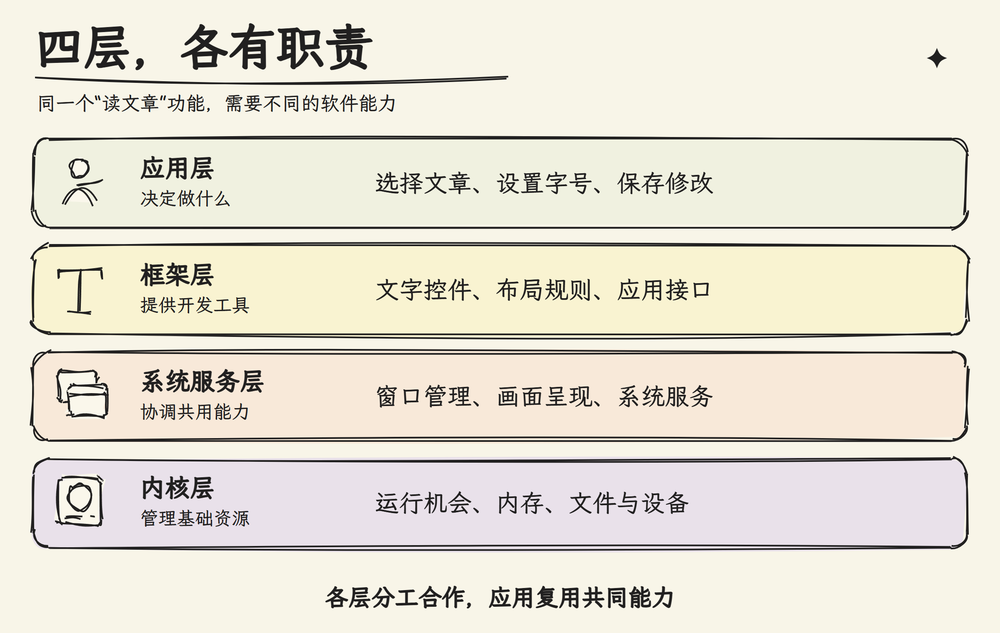
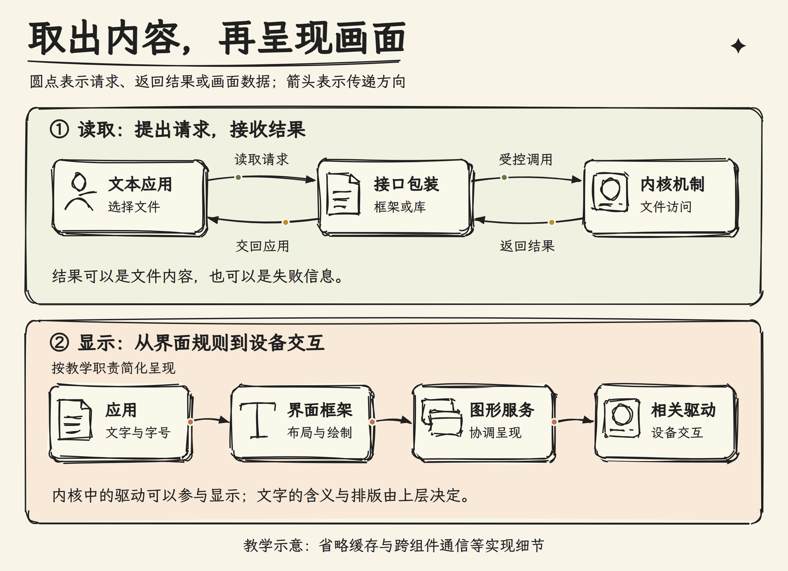
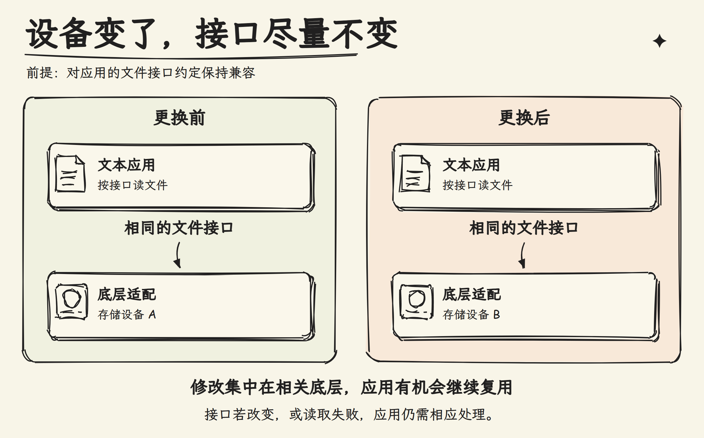

摘要
打开一篇本地文章，屏幕上出现几行文字。这个操作看似简单，却包含不同工作：应用选择内容，框架提供文字布局等开发能力，图形服务协调窗口，内核管理文件、内存和设备等基础资源。本课用这一情境解释 OpenHarmony 为什么分为应用、框架、系统服务和内核四层。分层的价值，是让应用通过明确接口使用共用能力，减少重复开发，并让硬件变化尽量在底层解决。正文先讲为什么不让每个应用自己控制设备，再通过职责图和分步流程说明各层分工，最后用更换存储设备和“读取失败”的例子检验理解。需要抓住两个边界：四层是职责划分，不是每次请求必须经过的四个站点；内核参与显示设备访问，不等于它决定文字颜色和排版。分布式软总线等系统能力也不因此成为内核功能。读完后，应能把一个用户功能拆成不同职责，而不是看到系统故障就直接判断为内核问题。
正文
1. 显示几行字，为什么需要这么多软件？
你打开一个文本应用，选择文件，再把字号调大。对你来说，这是一个功能；对系统来说，至少有三件事：取出文件内容、排好文字、把画面送到屏幕。
如果每个应用都自己控制存储和屏幕，会怎样？设备一换，应用就可能重写适配代码；多个应用争用屏幕，还得彼此约定谁先用。相同的基础工作被反复实现，出错也更难排查。
系统因此把共用能力组织起来，让应用通过接口使用。 接口就是双方约定的调用方式：传什么参数，得到什么结果，失败如何报告。 应用提出需求，实现细节由提供能力的组件处理。
这就是分层的出发点：不要让“我要显示文字”变成“我必须知道这块屏幕怎样工作”。
2. 四层分别负责什么？
OpenHarmony 官方项目概览把系统分为四层。下面是职责图：

应用层：决定内容。 文本应用选择打开哪篇文章、保存哪些修改。换一个应用，业务规则可以不同；它们仍能使用相同的系统能力。
框架层：让常见工作不用从头写。 比如界面框架提供文字控件和布局能力。应用选择字号，框架按规则安排文字，而不是让每个应用重新实现一套排版工具。
框架向开发者提供的 API，全称是 Application Programming Interface，即应用程序接口。它是代码可以调用的入口，不是屏幕上的按钮。
系统服务层：处理需要共同协调的事。 一个屏幕上可能同时有多个应用窗口。图形服务需要组织它们的画面，而不只是满足某一个应用的显示要求。
内核层：管理基础资源。 在本课程关注的 Linux 路线中，内核负责处理器运行机会、内存保护、文件访问等机制。驱动是与具体设备交互的软件，内核中的显示驱动可以参与屏幕设备访问。
框架与服务的区别在于关注点：框架面向“应用怎样方便地编程”，服务面向“系统怎样提供和协调能力”。框架调用可能请求服务，也可能在应用自身执行；二者不能简单当作同一个东西。
3. 跟着一篇文章走一遍
先把“读取”与“显示”分开看。图中绿色圆点表示读取请求，黄色表示返回结果，蜜桃色表示画面相关的数据传递：

读取从应用选定文件开始。应用通过接口提出请求，相关机制检查并处理，再交回内容或失败信息。图中的往返箭头提醒我们：应用还需要接收结果，才能决定下一步做什么。
框架或库可以包装文件接口。 库是一组可复用的代码。 在 Linux 路线中，需要内核文件能力时，请求会通过受控接口交给内核处理。系统调用的具体过程留到 Day004；现在先理解“提出请求”与“管理资源”不是一回事。
拿到内容后，应用选择文字与字号，借助框架组织布局和绘制；图形服务等组件协调画面呈现，需要设备交互时再由相应驱动参与。每一步解决的问题不同，前一步完成，并不意味着后面的工作已经完成。
因此，内核可以参与显示，但不会替文本应用决定“这段话该用红色”。 文字含义和界面规则属于上层，受保护的设备访问需要底层机制支持。 把显示全归给内核，或说显示与内核无关，都漏掉了协作的一半。
图中按教学职责简化了过程，省略缓存、跨组件通信等实现细节。四层不是四个必经站：有些框架工作在应用内部完成，有些文件请求会经库直接请求内核能力。分析真实执行顺序时，还需要查看对应接口和实现。
4. 分层的收益，换一次设备就看得见
假设产品更换了存储设备，但应用使用的文件接口约定不变。把更换前后放在一起看：

图中保持不变的是应用提出请求的方式，变化集中在相关驱动或底层实现。应用不必因为器件型号不同，就重新编写打开文章的业务逻辑。
这叫用 抽象 隔开细节：应用面对“读文件”这个能力，而不必处理具体器件。抽象不是把问题变没，而是让调用者只关心需要知道的部分。
例如，接口报告读取失败，应用仍须处理；接口只承诺最多读取一定数量，也不能理解为每次必定读满。隐藏设备细节，不等于隐藏所有限制。
如果接口约定也发生变化，应用仍可能需要修改。因此分层减少的是不必要的连带改动，不是保证底层随便改、上层永远不受影响。
5. 遇到新功能，先拆职责
分布式软总线听起来很“底层”，但官方架构将其列在系统服务层的系统基本能力中。它组织设备发现、连接和数据传输等能力；使用内核提供的网络机制，不代表整个软总线就是内核代码。
这里还要分清两种边界： 架构分层看职责，内核与用户空间的区分看执行环境。 用户空间是应用、许多框架和服务运行的内核之外的环境；系统服务很重要，也可以在这里运行。
再看“文章打不开”。先检查应用选择的路径、接口返回的错误，再判断是否涉及权限、文件系统或设备。界面上的同一个失败提示，可能有不同原因，不能直接贴上“内核故障”的标签。
可以用一个小对照收尾：把字号改大，主要检查应用和界面框架；多个窗口遮挡异常，先看窗口和图形协调；存储访问失败，再沿文件接口查到相关机制。 先判断谁负责哪件事，再用日志或源码确认原因。 这比背一张四层图更有用。
本课依据：OpenHarmony 项目概览，用于核对四层职责及分布式软总线的架构归属。该文档 master 分支会更新，本文图示为教学简化；资料记录见官方资料索引。